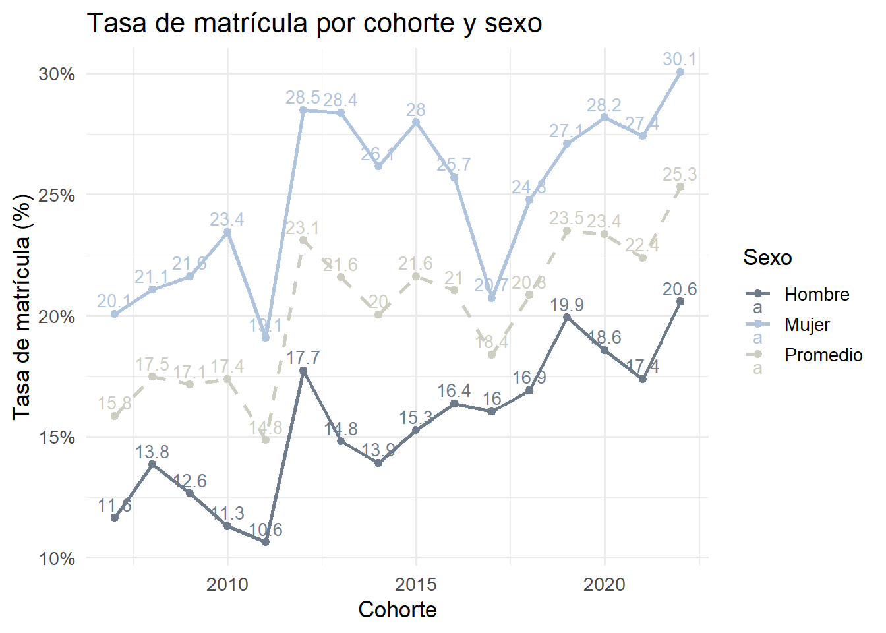

Minorías masculinas en pedagogía: Un estudio longitudinal de las trayectorias académicas de hombres en Chile (2007–2024)
Introducción
La distribución de género en las profesiones no es neutral ni aleatoria, sino que responde a estructuras históricas, culturales y sociales que asignan distintos valores, habilidades y expectativas a mujeres y hombres (Benería, 1991). En el campo de la educación, estas dinámicas han contribuido a una feminización sostenida de la profesión docente a nivel internacional, especialmente en los niveles iniciales y primarios (Organisation for Economic Co-operation and Development [OECD], 2017).
Este fenómeno tiene raíces profundas en los roles de género tradicionales, que han atribuido a las mujeres capacidades y habilidades relacionadas con el cuidado, la empatía y la enseñanza (Fiorucci et.al., 2022). En contraposición, la presencia masculina en las escuelas, y en específico, dentro de la primera etapa formativa, se encuentra permeada por dinámicas que conflictúan su pertinencia y desarrollo, en la medida que la conexión educativa directa con niños, y con ellos su familia, se aleja de aquellos roles esperables en hombres (Vargas, 2025; Weinerman, 2005; Carvalho, 1999). Esto ha generado una notable subrepresentación de hombres en las carreras de educación, una realidad que impacta tanto en la diversidad del cuerpo docente como en las dinámicas sociales dentro del sistema educativo (Vargas, 2025; García y Muñoz, 2023; Fernández et al., 2020).
En Chile, esta tendencia global se expresa con particular fuerza. Al comparar las tendencias internacionales de los porcentajes de profesoras mujeres en los últimos años, los porcentajes chilenos (Ministerio de Educación, Centro de Estudios [CEM], 2024a) superan en casi su totalidad a los promedios globales (OECD, s.f.). Sumado a esa sobrerrepresentación, se observan importantes diferencias en la distribución de la participación femenina chilena según el nivel educativo a considerar, acrecentando en niveles iniciales. Mientras que en educación básica la participación femenina ronda el 78,1%, en párvulo esta cifra llega a un 99,1% (CEM, 2024b). El fenómeno de la feminización, no es el único que se manifiesta en el escenario formativo y docente chileno, este es también parte de un escenario más complejo de transformaciones profundas del sistema docente (Montero y Fernández, 2021), siendo uno de estos el fenómeno del déficit docente, y en específico, el déficit docente idóneo (EligeEducar, 2021). Si bien, en los últimos años la cantidad de matrículas universitarias en carreras de educación se ha mantenido relativamente estable con una fluctuación no mayor al 3% (CEM, 2024a), una cantidad importante de programas se han dado de baja, pasando de 635 en el 2017 a 401 en 2024 (CEM, 2024a). Esta contracción debe comprenderse en el marco de una serie de reformas institucionales orientadas a fortalecer la calidad y legitimidad de la profesión docente (Montero y Fernández, 2021), reflejadas en la Ley 20.903 de Desarrollo Profesional Docente promulgada en el año 2016, la cual exige la acreditación tanto de las carreras pedagógicas como de aquellas instituciones que las imparten (Biblioteca del Congreso Nacional de Chile, 2025). Sin embargo, el desafío actual no se limita únicamente a la disminución en la oferta formativa, sino que se extiende hacia la necesidad de asegurar la presencia de docentes idóneos, es decir, de profesionales que no solo cuenten con formación acreditada en educación, sino que además ejerzan efectivamente en el aula, en los niveles y asignaturas para los cuales fueron preparados (EligeEducar, 2021). Estudios han advertido que una proporción significativa de quienes egresan de pedagogía no se inserta en el sistema escolar, o bien lo hace en condiciones precarias y por períodos breves, lo que reduce el impacto de los esfuerzos formativos (Elige Educar, 2021; Vergara, Arias y Villaroel, 2021). Esta situación revela una tensión entre la regulación de la calidad de la formación y la capacidad efectiva del sistema para atraer, retener y distribuir adecuadamente a los nuevos docentes, generando una paradoja: mientras se busca elevar los estándares académicos, persiste una carencia crónica de profesionales disponibles para cubrir las necesidades reales del sistema escolar (Vergara, Arias y Villaroel, 2021).
En este contexto, las trayectorias, desde la postulación hasta el ejercicio efectivo, del profesorado en pedagogías feminizadas no pueden analizarse como un fenómeno aislado ni únicamente vinculado a la sobrerrepresentación femenina. Por el contrario, estas forman parte de una configuración estructural que combina precariedad laboral, desvalorización simbólica y desequilibrios en la atracción y retención de nuevos profesionales. Si bien los hombres enfrentan obstáculos y formas particulares (Vergara et al, 2017; Subsecretaría de Educación Superior, 2023), estos se insertan en un campo más amplio en el que también las mujeres se ven afectadas. En este sentido, el escenario actual del sistema docente chileno no puede ser comprendido únicamente desde una perspectiva de género binaria, sino que debe ser desde una mirada estructural que reconozca las interacciones entre género, segmentación ocupacional y aspectos formativos. A partir de este diagnóstico, se vuelve necesario examinar con mayor profundidad las trayectorias educativas y laborales de los hombres en carreras de pedagogía altamente feminizadas. Si bien las desigualdades de género en el sistema formativo afectan transversalmente al conjunto del profesorado, los hombres que optan por ingresar a estos espacios enfrentan condiciones particulares de desajuste entre su elección vocacional y los mandatos tradicionales de masculinidad, lo que puede incidir en sus decisiones de ingreso, permanencia y desarrollo profesional. En un contexto marcado por el déficit de docentes idóneos y la creciente dificultad para atraer y retener profesionales en el sistema escolar, resulta relevante comprender cómo se despliegan estas trayectorias desde una posición de género históricamente minoritaria dentro del campo pedagógico.
Este estudio se propone aportar evidencia empírica sistematizada sobre dichas trayectorias, mediante el análisis de datos longitudinales nacionales entre 2007 y 2024. A partir de la observación de los patrones de matrícula, egreso e inserción laboral, y su relación con variables individuales, institucionales y contextuales, se busca contribuir a una comprensión más matizada de los mecanismos que reproducen o tensionan la brecha de género en la formación docente. El foco en los hombres no responde a una mirada compensatoria, sino al interés por indagar cómo operan las dinámicas estructurales de género en sujetos cuya elección profesional desafía los esquemas tradicionales de división sexual del trabajo educativo.
Objetivo general
Analizar las trayectorias educativas y laborales de hombres en carreras de educación altamente feminizadas en Chile entre los años 2007 a 2024.
Objetivos específicos
Comparar las trayectorias educativas formativas de hombres y mujeres en carreras de educación parvularia y pedagogía básica, considerando diferencias en tasas de titulación, abandono de la carrera y duración de los estudios.
Comparar las trayectorias laborales de hombres y mujeres en educación parvularia y básica, considerando variables laborales.
Examinar el efecto de variables individuales e institucionales sobre la probabilidad de ingreso, egreso e inserción laboral de estudiantes matriculados en carreras de pedagogía altamente feminizadas en Chile.
Pregunta de investigación
¿Cómo son las trayectorias educativas y laborales de los hombres que cursan carreras de pedagogía en Chile altamente feminizadas entre los años 2007 y 2024?
Revisión de la literatura
Feminización y división sexual del trabajo docente.
La actual composición feminizada del campo docente no debe entenderse como el resultado natural de una supuesta afinidad entre las mujeres y la enseñanza, sino como el producto de un proceso histórico de construcción social cuya legitimidad se funda en lo que Bourdieu y Passeron (1996) denominan arbitrariedad cultural. Este concepto alude al carácter contingente y selectivo de los significados, prácticas y disposiciones que una sociedad eleva a la categoría de legítimos, presentándose como universales o neutros, cuando en realidad son expresión de relaciones de poder que se han sedimentado institucionalmente. En este sentido, la sobrerrepresentación femenina en la docencia no obedece a una inclinación esencial hacia el cuidado, sino a un proceso de asignación simbólica que ha moldeado las estructuras de sentido del oficio docente, definiendo lo que se espera, valora y reconoce como propio de ese rol (Dantas, & Antloga, 2023).
Más que una simple transformación cuantitativa en la composición del profesorado (OECD, 2022), la feminización ha operado como un reordenamiento simbólico del campo educativo, en el que se han consolidado ciertas disposiciones asociadas a lo femenino, como entrega emocional, empatía o contención afectiva, como atributos deseables del buen docente (Dantas, & Antloga, 2023). Este desplazamiento ha ido acompañado, además, de una progresiva desvalorización del trabajo pedagógico, tanto en términos salariales como de estatus profesional (Rahayani, 2010), proceso que encuentra su fundamento en las lógicas más amplias de la división sexual del trabajo. Desde esta perspectiva, la docencia, especialmente en los niveles iniciales y básicos, ha sido construida socialmente como una extensión de las tareas de reproducción social tradicionalmente asignadas a las mujeres (Fraser, 2016), lo que ha reforzado su ubicación periférica en la jerarquía de las profesiones.
La segregación sexual ocupacional opera aquí en sus dos dimensiones: por una parte, la segregación horizontal concentra a las mujeres en ciertas ramas del empleo socialmente codificadas como “femeninas”, como la educación parvularia y básica; por otra, la segregación vertical restringe su acceso a posiciones de poder o dirección dentro del mismo campo (Charles, 2003). En el caso chileno, ambos mecanismos se expresan con claridad: mientras las mujeres representan más de dos tercios del profesorado en niveles básicos y alcanzan casi la totalidad en educación parvularia (CEM, 2024b).
Esta distribución no responde a las características intrínsecas del trabajo docente, sino a procesos culturales e institucionales que han construido dicho oficio como una extensión naturalizada de lo femenino (Dantas, & Antloga, 2023). En contextos laborales feminizados, el género opera como principio organizador que no solo define quién debe ocupar determinados espacios, sino también cuánto deben valer y cómo deben ejercerse (Bourdieu y Passeron, 1996; Bourdieu, 1996). En este sentido, la feminización redefine el valor de una ocupación, subordinándola dentro del campo laboral a través de la asociación con cualidades supuestamente innatas, como la vocación o la entrega, que terminan legitimando la precariedad (Mills, 2003). Como plantea Rahayani (2010), este fenómeno va más allá de la presencia femenina: implica transformaciones simbólicas en los significados y roles del trabajo, con frecuencia acompañadas por una pérdida de estatus o autoridad.
Esta lógica cultural se traduce en condiciones materiales concretas. La docencia, especialmente en sus niveles más feminizados, se encuentra marcada por bajos salarios, alta carga emocional, escasa autonomía y limitadas posibilidades de movilidad (Akiba et al., 2023; Lindsay & Lindsay, 1987; Connors, 1990; Bellei & Valenzuela, 2013). Lejos de contrarrestar estas desigualdades, la creciente presencia femenina puede reforzar su normalización, consolidando un modelo de empleo que asume el sacrificio personal como parte inherente del rol. Estudios recientes han mostrado que la feminización de ciertas ocupaciones se correlaciona con una degradación de su calidad laboral, tanto objetiva como subjetiva, incluso cuando se controla por nivel educativo, edad o tipo de país (Stier & Yaish, 2014). Esto obliga a pensar la docencia no sólo como un espacio feminizado en términos de acceso, sino como un campo estructurado por desigualdades persistentes que afectan las trayectorias de quienes lo habitan.
En este marco, el caso chileno no escapa a las lógicas transnacionales de desvalorización del trabajo de cuidado. La fuerte concentración de mujeres en las carreras de pedagogía, especialmente en niveles iniciales, coexiste con una segmentación interna que distribuye poder, prestigio y oportunidades de manera desigual. Así, la feminización de la docencia no es un dato demográfico neutro, sino una forma específica de organización del trabajo que reproduce jerarquías de género y configura escenarios diferenciados de inserción, permanencia y movilidad dentro del sistema educativo (Dantas, & Antloga, 2023).
Trayectorias educativas
Las trayectorias educativas constituyen una herramienta analítica clave para comprender cómo los y las estudiantes acceden, transitan y egresan del sistema de educación superior (Loder, 2024). Más que un simple recorrido cronológico, el concepto permite capturar la articulación entre decisiones individuales, condiciones institucionales y estructuras sociales que configuran los procesos formativos. En este sentido, las trayectorias deben entenderse como procesos dinámicos y multifactoriales, marcados por transiciones, interrupciones y bifurcaciones, en lugar de recorridos lineales y homogéneos (Haas & Hadjar, 2020).
Este enfoque ha sido fundamental para visibilizar cómo las desigualdades sociales, y particularmente las de género, se encarnan en formas diferenciadas de transitar por el sistema educativo. Julià (2018) plantea que las trayectorias expresan regularidades estructurales más que decisiones puramente individuales, al estar condicionadas por factores como el capital cultural de origen y las expectativas normativas asociadas al género. En línea con este argumento, la perspectiva de Bourdieu (2007) permite profundizar en la forma en que los distintos volúmenes y tipos de capital se traducen en recursos diferenciales que estructuran las posibilidades de acceso, permanencia y éxito. De este modo, las trayectorias no sólo reflejan decisiones personales, sino también los efectos de mecanismos de reproducción social que naturalizan las desigualdades preexistentes bajo la apariencia de mérito individual.
Desde esta perspectiva, el concepto de habitus (Bourdieu, 2007) resulta igualmente relevante, al entender las disposiciones de los sujetos como esquemas incorporados que orientan su actuar dentro del sistema educativo, ajustándose a las expectativas del campo sin necesidad de una reflexión consciente. Así, las trayectorias educativas se configuran en la intersección entre las estructuras objetivas del campo y las disposiciones subjetivas de los agentes, lo que explica la persistencia de ciertos patrones sociales aun en contextos de expansión de la matrícula.
Esta lectura permite complejizar el análisis de las transiciones educativas, al mostrar que no solo varía el acceso o egreso, sino también la forma en que se recorren los trayectos formativos. Desde esta perspectiva, la propuesta de Huberman (1993) resulta especialmente útil, al conceptualizar las trayectorias como secuencias estructuradas que adquieren sentido en su conjunto. Aunque su foco se ubica en el desarrollo profesional docente, su enfoque contribuye a los estudios cuantitativos al subrayar que momentos clave, como el ingreso, la titulación o la inserción laboral, sólo pueden comprenderse plenamente como parte de un proceso más amplio.
Barreras simbólicas y tensiones
En un campo educativo históricamente feminizado, la presencia de varones en carreras como educación parvularia y básica no constituye únicamente una anomalía estadística, sino una tensión estructural frente al orden simbólico que define los atributos legítimos del rol docente. Su participación activa interpela un conjunto de disposiciones históricamente generizadas, que asocian el “buen enseñar” con rasgos como el cuidado, la entrega afectiva o la vocación de servicio, elevando tales cualidades al estatus de norma profesional (González Castro, 2011).
Los hombres que optan por este camino deben no solo demostrar su pertenencia al campo, sino también enfrentar los múltiples filtros que operan desde la elección vocacional hasta el ejercicio profesional. Estereotipos de género, narrativas sobre el “perfil docente” y las propias condiciones laborales de los niveles iniciales actúan como barreras simbólicas que restringen su integración y continuidad (Valenzuela, Bellei & Ríos, 2014). A ello se suma una dimensión estructural del contexto chileno, el capital académico de origen, el cual condiciona el tipo de inserción profesional disponible. Docentes con menores credenciales tienden a comenzar su carrera en establecimientos de alta vulnerabilidad o complejidad, configurando trayectorias segmentadas desde el inicio que tienden a reproducirse con el tiempo (Cabezas, 2011; Luschei, 2006).
Su presencia en las aulas ha sido objeto de diversas representaciones, atravesadas por la expectativa de que se adapten a entornos construidos en torno a disposiciones feminizadas, así como por imaginarios que los sitúan como figuras excepcionales o incluso inapropiadas para esos espacios (Sumsion, 2000; King, 1998; Marcano y Suárez, 2022). Estas tensiones no provienen exclusivamente del entorno social externo, sino que se reproducen en las propias comunidades escolares, donde compañeras, directivos y apoderadas pueden percibir a los hombres como menos capacitados, menos empáticos o menos aptos para asumir tareas vinculadas al cuidado (Escalona, Cáceres y Torrego, 2025; Wainerman, 2005).
Estas dinámicas constituyen una forma de violencia simbólica (Bourdieu, 1996), en tanto naturalizan la arbitrariedad de ciertas disposiciones como legítimas, imponiendo estructuras de sentido que definen lo adecuado, lo deseable y lo visible en el campo docente. No se trata de una exclusión directa, sino de una posición ambigua que obliga a los varones a negociar constantemente su pertenencia y legitimidad. Esta tensión es una manifestación del orden patriarcal que restringe también las posibilidades de lo masculino, al vincularlo con el poder, la racionalidad instrumental y la distancia emocional, desvalorizando al mismo tiempo las prácticas históricamente feminizadas. En este marco, la docencia inicial, al ser leída socialmente como una extensión del maternaje, aparece como un territorio simbólicamente incompatible con el habitus masculino dominante, generando incomodidad, sospechas o exigencias de sobrelegitimación.
Desde esta perspectiva, los hombres que se insertan en estos espacios enfrentan trayectorias marcadas por la vigilancia identitaria, la expectativa de adaptación constante y la necesidad de justificar su presencia. Es posible entender desde Goffman (1997), que estos sujetos se ven compelidos a sostener una performance del rol docente bajo un guión simbólicamente ajeno, cuya desalineación puede devenir en sospecha o desaprobación tácita.
En este escenario, algunas instituciones han comenzado a implementar medidas orientadas a revertir la baja participación masculina, como los ingresos especiales para varones en carreras de educación parvularia (Universidad de Chile, 2021). Estos esfuerzos expresan una preocupación institucional, por la desigual distribución de género, pero resultan insuficientes, si no están acompañados en un cambio en las condiciones simbólicas y materiales que siguen limitando la permanencia y proyección profesional de los hombres en un campo históricamente feminizado.
Es a partir de lo expuesto que se plantean 3 principales hipótesis para las trayectorias masculinas:
H1. En carreras de pedagogía en educación parvularia y básica, los postulantes hombres presentan una menor probabilidad de matrícula efectiva que las mujeres, controlando por variables individuales e institucionales.
H2. Los hombres presentan una menor probabilidad de titulación en comparación con las mujeres, controlando por variables individuales e institucionales.
H3. Los docentes titulados hombres presentan una menor probabilidad de ejercer en una docencia efectiva, en comparación con las mujeres, controlando por variables individuales e institucionales.
Metodología
Diseño de investigación
Este estudio se inscribe dentro del paradigma de investigación cuantitativo, con un diseño longitudinal y explicativo. La estrategia metodológica se basa en el seguimiento individual de personas a lo largo del tiempo, mediante un identificador único anonimizado que garantiza la confidencialidad de los datos. Este enfoque permite reconstruir trayectorias educativas y laborales desde la postulación a carreras pedagógicas hasta la eventual inserción en el sistema escolar chileno, identificando patrones de ingreso, abandono, titulación e inserción laboral en función de variables individuales, institucionales y contextuales.
La estructura temporal de los datos posibilita analizar secuencias de eventos en distintos momentos del ciclo formativo y laboral. Además, permite incorporar simultáneamente dimensiones individuales, institucionales y contextuales, para observar su efecto sobre la trayectoria de quienes transitan por carreras altamente feminizadas.
Desde una perspectiva explicativa, el análisis se articula mediante modelos de regresión logística estándar y multinivel, los cuales permiten identificar asociaciones entre variables. En este caso, se estiman tres modelos independientes que analizan, respectivamente, la probabilidad de matrícula efectiva, la probabilidad de titulación y la probabilidad de inserción laboral en contextos de alta complejidad. Este enfoque permite observar cómo distintas características individuales e institucionales influyen en dichas probabilidades, así como comparar los patrones observados entre hombres y mujeres en un campo históricamente feminizado.
Fuentes de datos
Este estudio se basa en un diseño de tipo panel longitudinal, que permite observar las trayectorias académicas y laborales de estudiantes que ingresaron a carreras de pedagogía entre los años 2007 y 2024. La estrategia metodológica contempla la integración de bases de datos administrativas oficiales provistas por el Ministerio de Educación de Chile (MINEDUC) y el Departamento de Evaluación, Medición y Registro Educacional (DEMRE), lo que posibilita un seguimiento individualizado desde el proceso de admisión universitaria hasta el eventual ejercicio profesional en el sistema escolar.
Para ello, se construyeron tres paneles principales:
Panel de acceso universitario: elaborado a partir de los registros del DEMRE (Inscripción, Rendición, Postulación y Matrícula), permite caracterizar el perfil académico de ingreso, incluyendo puntajes en pruebas estandarizadas, preferencias de postulación y tipo de institución de destino.
Panel formativo: construido con los registros de Matrícula y Titulación en Educación Superior (MINEDUC), permite identificar trayectorias formativas diferenciadas, considerando eventos de deserción, continuidad y egreso, así como la duración total de los estudios.
Panel laboral docente: basado en la base de Cargos Docentes del MINEDUC, permite analizar las trayectorias de inserción profesional de los egresados en el sistema escolar chileno, considerando su continuidad, rol de educador y la dependencia administrativa en la que ejerce.
Se excluyen del análisis los programas con duración inferior a siete semestres, con el fin de asegurar comparabilidad entre trayectorias equivalentes. Permitiendo construir una base representativa del universo de estudiantes que han transitado por carreras de pedagogía altamente feminizadas en el período analizado, y realizar estimaciones sobre sus trayectorias.
Muestra
La muestra está compuesta por todas las personas que ingresaron a carreras de pedagogía en los niveles de educación parvularia y básica en Chile entre los años 2007 y 2024, según los registros de matrícula del Centro de Estudios del Mineduc. Se incluyen tanto hombres como mujeres, con el propósito de comparar trayectorias educativas y laborales diferenciadas por género.
La delimitación temporal de los años 2007 a 2024 se justifica por la disponibilidad de registros administrativos sistemáticos del Centro de Estudios del Ministerio de Educación, a partir del año 2007, ya que no existen bases previas consolidadas en el Centro de Estudios del Ministerio de Educación que permitan la trazabilidad longitudinal de cohortes anteriores.
Este estudio adopta un enfoque censal, al considerar la totalidad de los registros disponibles en dos bases administrativas complementarias. Por un lado, la base del DEMRE, que contiene información sobre postulaciones y matrícula inicial a carreras de pedagogía; y por otro, la base del Mineduc, que permite seguir la matrícula continua durante el pregrado y su eventual transición al ejercicio profesional docente. La unidad de análisis corresponde a personas identificadas de forma individual mediante un código anónimo único, lo que posibilita su seguimiento longitudinal a lo largo de los distintos paneles construidos.
Se excluyen del análisis:
Las carreras que no correspondan a los niveles definidos como objeto de estudio (parvularia, básica y mixta) .
Los programas de formación pedagógica con una duración inferior a siete semestres.
Los registros en los que la titulación ocurre en una carrera distinta a aquella consignada en el ingreso, a fin de mantener la coherencia entre la trayectoria formativa y el campo profesional analizado.
Aquellas personas cuya formación en pregrado para una misma carrera tenga una duración inferior a tres años, con el fin de evitar trayectorias incompletas y garantizar la consistencia temporal del seguimiento longitudinal.
Puntajes que se hayan obtenido desde la implementación de la PAES.
Análisis
1. Análisis descriptivos
En una primera etapa, se realizará un análisis descriptivo de las principales variables relevantes para el estudio, desagregadas por sexo, cohorte de ingreso, área disciplinar de la pedagogía, tipo de institución, región y duración de la carrera. Para ello, se emplearán medidas de tendencia central y dispersión en el caso de variables continuas, y frecuencias absolutas y relativas en variables categóricas.
Para visualizar las trayectorias y transiciones entre etapas (matrícula, titulación, inserción laboral), se emplearán diagramas de flujo tipo Sankey, lo que permitirá observar los flujos diferenciales de hombres y mujeres en carreras pedagógicas feminizadas.
2. Análisis inferenciales
En la primera etapa de los análisis inferenciales se estimaron modelos de regresión logística multivariada para el estudio de fenómenos en los que los individuos participan una única vez o presentan escasa repetición temporal.
En una segunda etapa se incorporarán modelos de regresión logística multinivel, implementados mediante la función glmer() de la librería lme4 en R, orientados a fenómenos que sí presentan estructura jerárquica. Estos modelos se aplicarán al análisis de la trayectoria formativa y de la inserción laboral docente. El diseño contempla dos niveles de análisis:
Nivel 1 individuos anidados por identificador único
Nivel 2 instituciones, lugar de estudio o ejercicio docente de los individuos
La combinación de ambas estrategias analíticas permite adaptar los modelos a la lógica de los datos, mientras la regresión logística multivariada se utiliza en contextos con trayectorias individuales no repetidas, los modelos multinivel capturan la heterogeneidad institucional y controlan la dependencia entre observaciones de sujetos anidados en un mismo contexto formativo o laboral.
Rows: 125546 Columns: 19
── Column specification ────────────────────────────────────────────────────────
Delimiter: ","
chr (7): ID_aux, SITUACION_POSTULANTE, SEXO, FECHA_NACIMIENTO, RAMA, rama, ...
dbl (11): CODIGO_REGION_D, CODIGO_REGION, REGIMEN, rendiciones, GRUPO_DEPEND...
lgl (1): matriculado
ℹ Use `spec()` to retrieve the full column specification for this data.
ℹ Specify the column types or set `show_col_types = FALSE` to quiet this message.
Rows: 323035 Columns: 10
── Column specification ────────────────────────────────────────────────────────
Delimiter: ","
chr (2): ID_aux, RAMA
dbl (7): SEXO, REGIMEN, GRUPO_DEPENDENCIA, rendiciones, PROM_NOTAS, anno, PR...
lgl (1): matriculado
ℹ Use `spec()` to retrieve the full column specification for this data.
ℹ Specify the column types or set `show_col_types = FALSE` to quiet this message.
#### Paleta personalizadacolores_matricula <-c("Sí"="#698B69", "No"="#CD3333")colores_preferencias <-c("1° preferencia"="#63B8FF","2° preferencia"="#5CACEE","3° preferencia"="#4594CD", "4°-5° preferencia"="#4682B4","6° o más"="#36648B")###codigos####saco proporciones por genero y por matricula, la idea es ver las diferencias####frecuencia no me sirve porque hombres son muy muy pocosproporciones <- base_matriculado_corta %>%group_by(SEXO, matriculado) %>%summarise(n =n(), .groups ="drop") %>%group_by(SEXO) %>%mutate(proporcion = n /sum(n) *100)proporciones <- proporciones %>%mutate(matriculado =ifelse(matriculado ==TRUE, "Sí", "No"))ggplot(proporciones, aes(x = SEXO, y = proporcion, fill = matriculado)) +geom_col(position ="stack") +labs(title ="Proporción de Matriculados y No Matriculados por Género",x ="Género",y ="Proporción (%)",fill ="¿Matriculado?" ) +scale_fill_manual(values = colores_matricula) +scale_y_continuous(labels = scales::percent_format(scale =1)) +theme_minimal()
Las mujeres presentan una mayor proporción de matrícula en carreras de pedagogía feminizadas en comparación con los hombres. No solo son más en términos absolutos, sino que proporcionalmente respecto a su propio grupo, la matrícula efectiva es más frecuente entre ellas. Este patrón da cuenta de la persistente feminización de estas carreras, tanto en volumen total como en participación relativa.
####quiero ver factor tiempo, saco tasa de matricula hombres y mujeres####annado promedio para que se note que los hombres tienen peor matriculatasas_por_sexo <- base_matriculado_corta %>%group_by(anno, SEXO) %>%summarise(tasa =mean(matriculado) *100, .groups ="drop")tasas_promedio <- tasas_por_sexo %>%group_by(anno) %>%summarise(SEXO ="Promedio", tasa =mean(tasa), .groups ="drop")tasas_todas <-bind_rows(tasas_por_sexo, tasas_promedio) %>%mutate(SEXO =factor(SEXO, levels =c("Hombre", "Mujer", "Promedio")))ggplot(tasas_todas, aes(x = anno, y = tasa, color = SEXO, linetype = SEXO)) +geom_line(size =1) +geom_point() +geom_text(aes(label =round(tasa, 1)), vjust =-0.5, size =3.5) +scale_color_manual(values =c("Hombre"="#6E7B8B","Mujer"="#B0C4DE","Promedio"="#CDCDC1")) +scale_linetype_manual(values =c("Hombre"="solid","Mujer"="solid","Promedio"="dashed")) +scale_y_continuous(labels = scales::percent_format(scale =1)) +labs(title ="Tasa de matrícula por cohorte y sexo",x ="Cohorte",y ="Tasa de matrícula (%)",color ="Sexo",linetype ="Sexo") +theme_minimal(base_size =13)
Warning: Using `size` aesthetic for lines was deprecated in ggplot2 3.4.0.
ℹ Please use `linewidth` instead.

El gráfico muestra que la tasa de matrícula ha sido consistentemente mayor en mujeres que en hombres a lo largo de todas las cohortes. Mientras la tasa femenina se mantiene entre el 20% y el 30%, en los hombres fluctúa en torno al 10–20%, con brechas visibles en cada año. Esta diferencia revela una participación comparativamente más baja de varones en carreras de pedagogía feminizadas, reforzando el patrón de feminización histórica en este campo. Aunque se observan algunas alzas en años recientes, la brecha relativa entre géneros persiste.
# A tibble: 2 × 3
SEXO promedio_rendiciones desviacion_rendiciones
<chr> <dbl> <dbl>
1 Hombre 1.90 1.03
2 Mujer 1.74 0.873
La diferencia en la cantidad de rendiciones entre hombres y mujeres, aunque estadísticamente acotada, revela matices importantes en la configuración de las trayectorias previas a la matrícula. Con una media de 1,89 rendiciones en hombres frente a 1,74 en mujeres, y una desviación estándar de 1,03 versus 0,87, se observa una dispersión más amplia entre los varones. Esta heterogeneidad no solo antecede el acto de matrícula, sino que puede influir directamente en la posición relativa que ocupan las carreras de pedagogía dentro de sus preferencias.
####quiero ver ahora las preferencias de aquellos que ingresan####uso otra base para estobase_panel_enriquecida_final_r <- base_panel_enriquecida_final_r %>%mutate(PREFERENCIA_RANGO =case_when(is.na(PREFERENCIA) ~NA_character_, PREFERENCIA ==1~"1° preferencia", PREFERENCIA ==2~"2° preferencia", PREFERENCIA ==3~"3° preferencia", PREFERENCIA %in%4:5~"4°-5° preferencia", PREFERENCIA >6~"6° o más",TRUE~NA_character_)) %>%filter(!is.na(PREFERENCIA_RANGO))matriculados <- base_panel_enriquecida_final_r %>%filter(matriculado ==TRUE)tabla_preferencias <- matriculados %>%count(PREFERENCIA_RANGO) %>%mutate(prop =round(n /sum(n) *100, 1))tabla_preferencias_sin_na <- tabla_preferencias %>%filter(!is.na(PREFERENCIA_RANGO))ggplot(tabla_preferencias, aes(x = PREFERENCIA_RANGO, y = prop, fill = PREFERENCIA_RANGO)) +geom_col() +geom_text(aes(label =paste0(prop, "%")), vjust =-0.5, size =4) +scale_fill_manual(values = colores_preferencias) +labs(title ="Distribución de preferencia de matrícula",x ="Rango de preferencia",y ="Proporción (%)",fill ="Preferencia" ) +theme_minimal(base_size =13) +theme(legend.position ="none")
En relación con la preferencia de matrícula, los resultados muestran una fuerte concentración en la primera opción declarada por los postulantes, donde se ubica el 71% de las matrículas efectivas. Las siguientes preferencias presentan una caída marcada: la segunda opción concentra el 15,4%, la tercera el 7,4%, y a partir de la cuarta opción la proporción desciende por debajo del 6%. Esto indica que la gran mayoría de quienes se matriculan lo hacen en la carrera priorizada en primer lugar.
####aca apilado y separado por generotabla_prop <- base_panel_enriquecida_final_r %>%group_by(SEXO, PREFERENCIA_RANGO) %>%summarise(n =n(), .groups ="drop") %>%group_by(SEXO) %>%mutate(prop = n /sum(n) *100) %>%# Aquí agregamos las etiquetasmutate(SEXO =factor(SEXO,levels =c(1, 2),labels =c("Hombres", "Mujeres")))##### Gráfico proporcional apilado (barra 100%)ggplot(tabla_prop, aes(x = SEXO, y = prop, fill = PREFERENCIA_RANGO)) +geom_col(position ="stack") +geom_text(aes(label =paste0(round(prop, 1), "%")),position =position_stack(vjust =0.5),size =3.5) +scale_fill_brewer(palette ="Blues") +labs(title ="Distribución proporcional de preferencia por género",x ="Género",y ="Proporción (%)",fill ="Rango de preferencia" ) +theme_minimal(base_size =13)
Al desagregar por género, se observa que tanto hombres como mujeres privilegian mayoritariamente su primera opción (65,2% y 71,3%, respectivamente). Sin embargo, los hombres tienden a matricularse en mayor proporción en segundas y terceras preferencias (16,9% y 9,7%) que las mujeres (15,2% y 7,1%). Esto sugiere que, si bien en ambos grupos la primera preferencia domina ampliamente, los hombres muestran una mayor dispersión en las opciones de matrícula en comparación con las mujeres, quienes concentran aún más sus decisiones en la primera alternativa.
####Rama tecnico vs humanista/cientificotabla_rama_sexo <- base_matriculado_corta %>%filter(!is.na(rama), !is.na(SEXO)) %>%group_by(SEXO, rama) %>%summarise(n =n(), .groups ="drop") %>%group_by(SEXO) %>%mutate(prop = n /sum(n) *100)ggplot(tabla_rama_sexo, aes(x = SEXO, y = prop, fill = rama)) +geom_col(position ="stack") +geom_text(aes(label =paste0(round(prop, 1), "%")),position =position_stack(vjust =0.5),size =4) +scale_fill_manual(values =c("H"="#B0C4DE", "T"="#6E7B8B")) +labs(title ="Distribución proporcional de ramas por género",x ="Género",y ="Proporción (%)",fill ="Rama" ) +theme_minimal(base_size =13)
####lo mismo pero para ver si hay diferencia entre no matriculado y matriculadotabla_rama_sexo_mat <- base_matriculado_corta %>%filter(!is.na(rama), !is.na(SEXO), !is.na(matriculado)) %>%group_by(SEXO, matriculado, rama) %>%summarise(n =n(), .groups ="drop") %>%group_by(SEXO, matriculado) %>%mutate(prop = n /sum(n) *100)ggplot(tabla_rama_sexo_mat, aes(x = SEXO, y = prop, fill = rama)) +geom_col(position ="stack") +geom_text(aes(label =paste0(round(prop, 1), "%")),position =position_stack(vjust =0.5),size =3.5) +facet_wrap(~ matriculado, labeller =labeller(matriculado =c("TRUE"="Matriculado", "FALSE"="No matriculado"))) +scale_fill_manual(values =c("H"="#B0C4DE", "T"="#6E7B8B")) +labs(title ="Distribución proporcional de ramas por género y matrícula",x ="Género",y ="Proporción (%)",fill ="Rama" ) +theme_minimal(base_size =13)
La distribución proporcional de ramas de enseñanza media, desagregada por género y condición de matrícula, muestra una alta consistencia entre grupos. En todos los casos, la rama humanista-científica (H) concentra la gran mayoría de los postulantes, mientras que la rama técnico-profesional (T) representa una proporción menor, cercana al 25–30%.
Entre los no matriculados, tanto hombres como mujeres provienen mayoritariamente de la rama humanista. Una tendencia similar se observa en los matriculados, aunque con una ligera diferencia por género: en los hombres la proporción de técnico-profesional se mantiene en torno al 29,5%, mientras que en las mujeres desciende a 22,4%.
Este patrón sugiere que, aunque la rama humanista-científica domina en ambos géneros, la matrícula masculina mantiene una presencia algo mayor de estudiantes provenientes de la educación técnico-profesional en comparación con las mujeres, quienes se concentran en mayor medida en la formación humanista-científica.
####Ver dependencias de donde vienen pero por municipal, particular pagado, particular subvencionadotabla_dependencia <- base_matriculado_corta %>%filter(!is.na(matriculado), !is.na(SEXO)) %>%group_by(SEXO, matriculado, dependencia_label) %>%summarise(n =n(), .groups ="drop") %>%group_by(SEXO, matriculado) %>%mutate(prop = n /sum(n) *100)ggplot(tabla_dependencia, aes(x = SEXO, y = prop, fill = dependencia_label)) +geom_col(position ="stack") +geom_text(aes(label =paste0(round(prop, 1), "%")),position =position_stack(vjust =0.5),size =3.5) +facet_wrap(~ matriculado, labeller =labeller(matriculado =c("TRUE"="Matriculado", "FALSE"="No matriculado"))) +scale_fill_manual(values =c("Municipal"="#6E7B8B","Particular subvencionado"="#B0C4DE","Particular pagado"="#EEE8AA" )) +labs(title ="Distribución Tipo de dependencia, género y matrícula",x ="Género",y ="Proporción (%)",fill ="Dependencia" ) +theme_minimal(base_size =13)
La distribución por dependencia escolar revela patrones diferenciados según género. Entre los matriculados, los hombres provienen mayoritariamente de establecimientos municipales (50,1%), mientras que en las mujeres destaca una mayor proporción de egresadas de colegios particulares pagados (14,1%). En ambos casos, el sector particular subvencionado concentra alrededor de la mitad de los ingresos efectivos (45–49%).
# A tibble: 1 × 3
ID_aux anno n
<chr> <dbl> <int>
1 id_0312903871264 2013 4
#### Ver variables de interesvariables_interes <- base_matriculado_corta %>%select(SEXO, rendiciones, REGIMEN, GRUPO_DEPENDENCIA, RAMA, anno, matriculado, PTJE_NEM)summary(variables_interes)
SEXO rendiciones REGIMEN GRUPO_DEPENDENCIA
Length:125546 Min. : 1.000 Min. :0.000 Min. :1.000
Class :character 1st Qu.: 1.000 1st Qu.:3.000 1st Qu.:2.000
Mode :character Median : 2.000 Median :3.000 Median :2.000
Mean : 1.767 Mean :2.814 Mean :2.348
3rd Qu.: 2.000 3rd Qu.:3.000 3rd Qu.:3.000
Max. :16.000 Max. :3.000 Max. :4.000
NA's :2640
RAMA anno matriculado PTJE_NEM
Length:125546 Min. :2007 Mode :logical Min. : 0.0
Class :character 1st Qu.:2009 FALSE:96974 1st Qu.:496.0
Mode :character Median :2013 TRUE :28572 Median :558.0
Mean :2014 Mean :558.3
3rd Qu.:2018 3rd Qu.:620.0
Max. :2022 Max. :844.0
NA's :7
base_matriculado_corta <- base_matriculado_corta %>%mutate(edad_z =scale(edad)[,1],anno_z =scale(anno)[,1],rendiciones_z =scale(rendiciones)[,1],PTJE_NEM_z =scale(PTJE_NEM)[,1],PROM_NOTAS_z =scale(PROM_NOTAS)[,1])# Modelo 2: + Sexomodelo_2 <-glmer(matriculado ~ SEXO + (1| dependencia), data = base_matriculado_corta, family = binomial)# Modelo 3: + Edad y añomodelo_3 <-glmer(matriculado ~ SEXO + edad_z + anno_z + (1| dependencia), data = base_matriculado_corta, family = binomial)# Modelo 4: + Rendiciones y PTJE_NEMmodelo_4 <-glmer(matriculado ~ rendiciones_z + PTJE_NEM_z + rama + (1| dependencia), data = base_matriculado_corta, family = binomial)# Modelo 5 (final): + Ramamodelo_5 <-glmer(matriculado ~ SEXO + edad_z + anno_z + rendiciones_z + PTJE_NEM_z + rama + (1| dependencia), data = base_matriculado_corta, family = binomial)tab_model(modelo_2, modelo_3, modelo_4, modelo_5,transform ="exp", # odds ratiosshow.icc =TRUE,show.aic =TRUE,show.obs =TRUE,show.re.var =TRUE,dv.labels =c("Genero", "Variables personales", "Variables academicas", "Modelo total"),title ="Modelos Logísticos Multinivel paso a paso (Odds Ratios)")
Modelos Logísticos Multinivel paso a paso (Odds Ratios)
Genero
Variables personales
Variables academicas
Modelo total
Predictors
Odds Ratios
CI
p
Odds Ratios
CI
p
Odds Ratios
CI
p
Odds Ratios
CI
p
(Intercept)
0.20
0.15 – 0.26
<0.001
0.20
0.14 – 0.28
<0.001
0.34
0.25 – 0.45
<0.001
0.22
0.16 – 0.28
<0.001
SEXO [Mujer]
1.86
1.79 – 1.94
<0.001
1.82
1.74 – 1.90
<0.001
1.66
1.59 – 1.73
<0.001
edad z
1.05
1.04 – 1.07
<0.001
1.10
1.08 – 1.11
<0.001
anno z
1.13
1.12 – 1.15
<0.001
1.13
1.12 – 1.15
<0.001
rendiciones z
0.95
0.93 – 0.96
<0.001
0.92
0.91 – 0.94
<0.001
PTJE NEM z
1.42
1.40 – 1.44
<0.001
1.39
1.37 – 1.42
<0.001
rama [T]
0.82
0.79 – 0.84
<0.001
0.80
0.78 – 0.83
<0.001
Random Effects
σ2
3.29
3.29
3.29
3.29
τ00
0.10 dependencia
0.10 dependencia
0.07 dependencia
0.06 dependencia
ICC
0.03
0.03
0.02
0.02
N
3 dependencia
3 dependencia
3 dependencia
3 dependencia
Observations
125546
125546
125536
125536
Marginal R2 / Conditional R2
0.015 / 0.044
0.021 / 0.049
0.039 / 0.058
0.057 / 0.074
AIC
132690.074
132275.933
130937.625
129768.273
En el modelo de regresión logística multivariada, se observa que las mujeres presentan 1.63 veces más probabilidades de matricularse en carreras de pedagogía altamente feminizadas en comparación con los hombres, controlando por el resto de los predictores. El número de rendiciones de la prueba se asocia negativamente con la matrícula: por cada rendición adicional, las probabilidades de ingreso disminuyen en torno a un 7% (OR = 0.93).
En relación con los antecedentes académicos, el puntaje NEM presenta un efecto prácticamente neutro (OR = 1.00), lo que sugiere que, en este caso, su influencia sobre la matrícula es marginal. Por otra parte, el régimen de estudios muestra que los programas vespertinos reducen la probabilidad de matricularse en un 5% respecto de los programas diurnos (OR = 0.95).
El grupo de dependencia del establecimiento escolar de origen también evidencia diferencias: quienes provienen de colegios municipales y subvencionados presentan aproximadamente un 26% menos de probabilidades de matricularse en comparación con quienes egresan de colegios particulares (OR = 0.74). Finalmente, el año de cohorte revela un efecto positivo: cada nuevo año se asocia a un incremento de alrededor de 3% en las probabilidades de matrícula (OR = 1.03).
En conjunto, estos resultados indican que el acceso a la matrícula no solo está mediado por factores individuales como el género y la trayectoria de rendiciones, sino también por el tipo de establecimiento y la modalidad de estudio, reflejando la interacción entre características personales y contextuales en el ingreso a carreras pedagógicas feminizadas.
###o ver si me quedo con esto modelo_logit_simple <-glm(matriculado ~ SEXO + edad_z + PTJE_NEM_z + rendiciones_z + anno_z + rama,data = base_matriculado_corta,family = binomial)modelo_logit_simple <-glm( matriculado ~ SEXO + edad_z + anno_z + rendiciones_z + PTJE_NEM_z + rama,data = base_matriculado_corta,family = binomial)summary(modelo_logit_simple)
Call:
glm(formula = matriculado ~ SEXO + edad_z + anno_z + rendiciones_z +
PTJE_NEM_z + rama, family = binomial, data = base_matriculado_corta)
Coefficients:
Estimate Std. Error z value Pr(>|z|)
(Intercept) -1.639989 0.020697 -79.24 <2e-16 ***
SEXOMujer 0.530358 0.021722 24.42 <2e-16 ***
edad_z 0.085654 0.006588 13.00 <2e-16 ***
anno_z 0.133252 0.006895 19.32 <2e-16 ***
rendiciones_z -0.085929 0.007427 -11.57 <2e-16 ***
PTJE_NEM_z 0.337389 0.007320 46.09 <2e-16 ***
ramaT -0.312566 0.016027 -19.50 <2e-16 ***
---
Signif. codes: 0 '***' 0.001 '**' 0.01 '*' 0.05 '.' 0.1 ' ' 1
(Dispersion parameter for binomial family taken to be 1)
Null deviance: 134665 on 125535 degrees of freedom
Residual deviance: 130300 on 125529 degrees of freedom
(10 observations deleted due to missingness)
AIC: 130314
Number of Fisher Scoring iterations: 4
Call:
glm(formula = matriculado ~ SEXO + rendiciones + REGIMEN + GRUPO_DEPENDENCIA +
RAMA + anno + PTJE_NEM, family = binomial, data = base_matriculado_corta)
Coefficients:
Estimate Std. Error z value Pr(>|z|)
(Intercept) -104.65717615 4.40999531 -23.732 < 0.0000000000000002 ***
SEXOMujer 0.47492528 0.02440135 19.463 < 0.0000000000000002 ***
rendiciones -0.07541709 0.00938715 -8.034 0.000000000000000943 ***
REGIMEN -0.07014809 0.01756105 -3.995 0.000064823475360614 ***
GRUPO_DEPENDENCIA -0.23458600 0.01288699 -18.203 < 0.0000000000000002 ***
RAMA 0.23008480 0.01957657 11.753 < 0.0000000000000002 ***
anno 0.05039982 0.00219116 23.001 < 0.0000000000000002 ***
PTJE_NEM 0.00367713 0.00009342 39.360 < 0.0000000000000002 ***
---
Signif. codes: 0 '***' 0.001 '**' 0.01 '*' 0.05 '.' 0.1 ' ' 1
(Dispersion parameter for binomial family taken to be 1)
Null deviance: 99199 on 93846 degrees of freedom
Residual deviance: 95592 on 93839 degrees of freedom
(31699 observations deleted due to missingness)
AIC: 95608
Number of Fisher Scoring iterations: 4
modelo_logit_matri_1 <-glm(matriculado ~ SEXO + rendiciones + REGIMEN + GRUPO_DEPENDENCIA+ anno + PTJE_NEM,data = base_matriculado_corta,family = binomial)summary(modelo_logit_matri_1)
Call:
glm(formula = matriculado ~ SEXO + rendiciones + REGIMEN + GRUPO_DEPENDENCIA +
anno + PTJE_NEM, family = binomial, data = base_matriculado_corta)
Coefficients:
Estimate Std. Error z value Pr(>|z|)
(Intercept) -56.56684354 2.91079055 -19.433 < 0.0000000000000002 ***
SEXOMujer 0.49155542 0.02195596 22.388 < 0.0000000000000002 ***
rendiciones -0.07296809 0.00820936 -8.888 < 0.0000000000000002 ***
REGIMEN -0.04726329 0.01493205 -3.165 0.00155 **
GRUPO_DEPENDENCIA -0.27811835 0.01061613 -26.198 < 0.0000000000000002 ***
anno 0.02672052 0.00144757 18.459 < 0.0000000000000002 ***
PTJE_NEM 0.00355075 0.00007936 44.744 < 0.0000000000000002 ***
---
Signif. codes: 0 '***' 0.001 '**' 0.01 '*' 0.05 '.' 0.1 ' ' 1
(Dispersion parameter for binomial family taken to be 1)
Null deviance: 131903 on 122898 degrees of freedom
Residual deviance: 127428 on 122892 degrees of freedom
(2647 observations deleted due to missingness)
AIC: 127442
Number of Fisher Scoring iterations: 4
OR <-exp(coef(modelo_logit_matri_1)) # ORIC <-exp(confint(modelo_logit_matri_1)) # IC 95%
Waiting for profiling to be done...
tab_model(modelo_logit_matri_1,transform ="exp", show.ci =TRUE, show.se =TRUE, show.p =TRUE, digits =3, title ="Modelo logístico: Odds Ratios sobre la probabilidad de matrícula")
Profiled confidence intervals may take longer time to compute.
Use `ci_method="wald"` for faster computation of CIs.
Modelo logístico: Odds Ratios sobre la probabilidad de matrícula
matriculado
Predictors
Odds Ratios
std. Error
CI
p
(Intercept)
0.000
0.000
0.000 – Inf
<0.001
SEXO [Mujer]
1.635
0.036
0.000 – Inf
<0.001
rendiciones
0.930
0.008
0.000 – Inf
<0.001
REGIMEN
0.954
0.014
0.000 – Inf
0.002
GRUPO DEPENDENCIA
0.757
0.008
0.000 – Inf
<0.001
anno
1.027
0.001
0.000 – Inf
<0.001
PTJE NEM
1.004
0.000
0.000 – Inf
<0.001
Observations
122899
R2 Tjur
0.036
tabla_OR <-tibble(Variable =names(OR),OR =round(OR, 3),IC_95 =paste0("[", round(IC[,1], 3), " – ", round(IC[,2], 3), "]"))# Mostrar en tabla gttabla_OR %>%gt() %>%tab_header(title ="Modelo de probabilidad de matrícula") %>%cols_label(Variable ="Variable",OR ="Odds Ratio",IC_95 ="IC 95%")
Profiled confidence intervals may take longer time to compute.
Use `ci_method="wald"` for faster computation of CIs.
Profiled confidence intervals may take longer time to compute.
Use `ci_method="wald"` for faster computation of CIs.
Profiled confidence intervals may take longer time to compute.
Use `ci_method="wald"` for faster computation of CIs.
Modelos Logísticos Multinivel (Odds Ratios)
Variables personales
Variables contextuales
Modelo total
Predictors
Odds Ratios
CI
p
Odds Ratios
CI
p
Odds Ratios
CI
p
(Intercept)
0.03
0.02 – 0.03
<0.001
0.00
0.00 – 0.00
<0.001
0.00
0.00 – 0.00
<0.001
SEXO [Mujer]
1.75
1.68 – 1.82
<0.001
1.63
1.57 – 1.71
<0.001
rendiciones
0.94
0.93 – 0.96
<0.001
0.93
0.91 – 0.94
<0.001
PTJE NEM
1.00
1.00 – 1.00
<0.001
1.00
1.00 – 1.00
<0.001
REGIMEN
0.95
0.92 – 0.97
<0.001
0.95
0.93 – 0.98
0.002
GRUPO DEPENDENCIA
0.75
0.73 – 0.76
<0.001
0.76
0.74 – 0.77
<0.001
anno
1.03
1.03 – 1.03
<0.001
1.03
1.02 – 1.03
<0.001
Observations
125539
122906
122899
R2 Tjur
0.027
0.011
0.036
AIC
131230.804
130588.322
127441.583
vif(modelo_logit_matri_1_3)
SEXO rendiciones PTJE_NEM REGIMEN
1.017972 1.040387 1.028671 1.002231
GRUPO_DEPENDENCIA anno
1.006818 1.030183
##base de datos abierta 1/2base_unica <-read_delim("https://raw.githubusercontent.com/sophkar/tesis/main/base_unica.csv",delim =",")
Rows: 94399 Columns: 9
── Column specification ────────────────────────────────────────────────────────
Delimiter: ","
chr (4): categoria_peda, tipo_inst_recod, egreso, sexo
dbl (5): cat_periodo, mrun, gen_alu, cod_inst, egresa
ℹ Use `spec()` to retrieve the full column specification for this data.
ℹ Specify the column types or set `show_col_types = FALSE` to quiet this message.
Rows: 334875 Columns: 8
── Column specification ────────────────────────────────────────────────────────
Delimiter: ","
chr (2): tipo_inst_3, tipo_inst_recod
dbl (6): cat_periodo, mrun, gen_alu, dur_estudio_carr, categoria_peda, egresa
ℹ Use `spec()` to retrieve the full column specification for this data.
ℹ Specify the column types or set `show_col_types = FALSE` to quiet this message.
Rows: 334875 Columns: 9
── Column specification ────────────────────────────────────────────────────────
Delimiter: ","
chr (4): categoria_peda, tipo_inst_recod, egreso, sexo
dbl (5): cat_periodo, mrun, gen_alu, cod_inst, egresa
ℹ Use `spec()` to retrieve the full column specification for this data.
ℹ Specify the column types or set `show_col_types = FALSE` to quiet this message.
Rows: 333510 Columns: 5
── Column specification ────────────────────────────────────────────────────────
Delimiter: ","
dbl (5): mrun, cat_periodo, categoria_peda, egresa, gen_alu
ℹ Use `spec()` to retrieve the full column specification for this data.
ℹ Specify the column types or set `show_col_types = FALSE` to quiet this message.
###codigos#### Paleta personalizadacolores_egreso <-c("Sí"="#698B69", "No"="#CD3333")####ver duracion de los estudiosduracion_promedio_categoria <- base_propu_trayec_r %>%group_by(categoria_peda) %>%summarise(promedio_duracion =mean(dur_estudio_carr, na.rm =TRUE))####calcular duración individual (por cantidad de años con presencia en la carrera)duracion_individual <- base_propu_trayec_r %>%filter(!is.na(cat_periodo)) %>%# asegurarse que anno existagroup_by(mrun) %>%summarise(duracion_carrera =n_distinct(cat_periodo),sexo =first(gen_alu), egresado =first(egresa),categoria_peda =first(categoria_peda))duracion_genero_categoria <- duracion_individual %>%group_by(sexo, categoria_peda) %>%summarise(promedio_anios =mean(duracion_carrera, na.rm =TRUE),mediana_anios =median(duracion_carrera, na.rm =TRUE),n =n())
`summarise()` has grouped output by 'sexo'. You can override using the
`.groups` argument.
mrun cat_periodo categoria_peda egresa
Min. : 388 Min. :2007 Min. :1.000 Min. :0.0000
1st Qu.: 6274311 1st Qu.:2011 1st Qu.:1.000 1st Qu.:1.0000
Median :12527040 Median :2014 Median :2.000 Median :1.0000
Mean :12512133 Mean :2014 Mean :1.527 Mean :0.8246
3rd Qu.:18761934 3rd Qu.:2018 3rd Qu.:2.000 3rd Qu.:1.0000
Max. :26988154 Max. :2024 Max. :3.000 Max. :1.0000
NA's :29
gen_alu
Min. :1.000
1st Qu.:2.000
Median :2.000
Mean :1.919
3rd Qu.:2.000
Max. :2.000
####Proporcion de egreso por carrera y generoproporciones_egreso <- base_propu_trayec_r %>%mutate(sexo =case_when( gen_alu ==1~"Hombre", gen_alu ==2~"Mujer" ),egresa =ifelse(egresa ==1, "Sí", "No"),categoria_peda =factor(categoria_peda, levels =c(1, 2, 3),labels =c("Parvularia", "Básica", "Mixta")) ) %>%group_by(sexo, categoria_peda, egresa) %>%summarise(n =n(), .groups ="drop") %>%group_by(sexo, categoria_peda) %>%mutate(proporcion = n /sum(n) *100)ggplot(proporciones_egreso, aes(x = categoria_peda, y = proporcion, fill = egresa)) +geom_col(position ="stack") +facet_wrap(~ sexo) +labs(title ="Proporción de egreso por carrera y género",x ="Categoría Pedagógica",y ="Proporción (%)",fill ="¿Egresó?" ) +scale_fill_manual(values = colores_egreso) +scale_y_continuous(labels = scales::percent_format(scale =1)) +theme_minimal(base_size =13)
La proporción de egreso muestra diferencias tanto por género como por categoría pedagógica. En los hombres, los niveles de egreso son más bajos en comparación con las mujeres, especialmente en parvularia, donde menos de la mitad culmina sus estudios. En básica y en programas mixtos la brecha se mantiene, aunque con una mayor proporción de egresados respecto a parvularia.
En el caso de las mujeres, las tasas de egreso son más altas en todas las categorías, superando consistentemente el 70%. Destaca que en pedagogía básica y parvularia la mayoría logra egresar, mientras que en programas mixtos la proporción de no egreso es relativamente mayor, aunque aún inferior a la observada en hombres.
####evolucion por annotasas_por_egreso <- base_trayectorias_SC_ultimo_dato %>%mutate(SEXO =case_when( gen_alu ==1~"Hombre", gen_alu ==2~"Mujer" ) ) %>%group_by(cat_periodo, SEXO) %>%summarise(tasa =mean(egresa, na.rm =TRUE) *100, .groups ="drop")##### Promedio general por añotasas_promedio <- tasas_por_egreso %>%group_by(cat_periodo) %>%summarise(SEXO ="Promedio", tasa =mean(tasa), .groups ="drop")##### Unirtasas_todas <-bind_rows(tasas_por_egreso, tasas_promedio) %>%mutate(SEXO =factor(SEXO, levels =c("Hombre", "Mujer", "Promedio")))tasas_todas_filtradas <- tasas_todas %>%filter(cat_periodo <=2022)##### Gráfico veste no lo reportoggplot(tasas_todas_filtradas, aes(x = cat_periodo, y = tasa, color = SEXO, linetype = SEXO)) +geom_line(size =1) +geom_point() +geom_text(aes(label =round(tasa, 1)), vjust =-0.5, size =3.5) +scale_color_manual(values =c("Hombre"="#6E7B8B","Mujer"="#B0C4DE","Promedio"="#CDCDC1" ) ) +scale_linetype_manual(values =c("Hombre"="solid","Mujer"="solid","Promedio"="dashed" ) ) +scale_y_continuous(labels = scales::percent_format(scale =1)) +labs(title ="Tasa de egreso observada por año y sexo",x ="Año observado (último año por persona)",y ="Tasa de egreso (%)",color ="Sexo",linetype ="Sexo" ) +theme_minimal(base_size =13)
####proporciones institucionesbase_propu_trayec_r <- base_propu_trayec_r %>%filter(tipo_inst_3 !="Universidades (* Carrera en Convenio)") %>%mutate(tipo_inst_recod =case_when( tipo_inst_3 %in%c("Universidades Privadas", "Universidades Privadas CRUCH") ~"Universidad privada", tipo_inst_3 =="Universidades Estatales CRUCH"~"Universidad estatal", tipo_inst_3 =="Institutos Profesionales"~"Instituto profesional",TRUE~NA_character_ ),tipo_inst_recod =factor(tipo_inst_recod, levels =c("Universidad estatal", "Universidad privada", "Instituto profesional")) )proporciones_inst <- base_propu_trayec_r %>%filter(!is.na(tipo_inst_recod)) %>%group_by(cat_periodo, tipo_inst_recod) %>%summarise(n =n(), .groups ="drop") %>%group_by(cat_periodo) %>%mutate(proporcion = n /sum(n))ggplot(proporciones_inst, aes(x = cat_periodo, y = proporcion, fill = tipo_inst_recod)) +geom_area(color ="white") +scale_y_continuous(labels =percent_format()) +scale_fill_manual(values =c("Universidad estatal"="#6E7B8B","Universidad privada"="#B0C4DE","Instituto profesional"="#CDCDC1" ) ) +labs(title ="Evolución proporcional de matrícula por tipo de institución",x ="Año",y ="Proporción del total",fill ="Tipo de institución" ) +theme_minimal(base_size =13)
proporciones_inst_genero <- base_propu_trayec_r %>%filter(!is.na(tipo_inst_recod), gen_alu %in%c(1, 2)) %>%mutate(sexo =case_when( gen_alu ==1~"Hombre", gen_alu ==2~"Mujer" ) ) %>%group_by(cat_periodo, tipo_inst_recod, sexo) %>%summarise(n =n(), .groups ="drop") %>%group_by(cat_periodo, sexo) %>%mutate(proporcion = n /sum(n))#####grafico comparativo entre hombres y mujeres segun institucionggplot(proporciones_inst_genero, aes(x = cat_periodo, y = proporcion, fill = tipo_inst_recod)) +geom_area(color ="white") +scale_y_continuous(labels = scales::percent_format()) +scale_fill_manual(values =c("Universidad estatal"="#6E7B8B","Universidad privada"="#B0C4DE","Instituto profesional"="#CDCDC1" ) ) +labs(title ="Evolución de matrícula por institución y género",x ="Año",y ="Proporción del total",fill ="Tipo de institución" ) +facet_wrap(~ sexo) +theme_minimal(base_size =13)
La evolución de la matrícula por tipo de institución muestra un cambio marcado en la composición del sistema formador entre 2007 y 2023. En ambos géneros se observa una reducción progresiva de la participación de los institutos profesionales, que hacia 2020 prácticamente desaparecen como vía de ingreso a pedagogía. Paralelamente, las universidades privadas ganan un peso creciente, especialmente entre los hombres, donde hacia el final del período concentran más de la mitad de la matrícula.
En el caso de las mujeres, si bien también aumenta la participación de las universidades privadas, las universidades estatales mantienen un peso relativamente mayor que en los hombres, representando una proporción más estable a lo largo del tiempo.
####preparacion y modelos# Conteo de NA por variablena_count <-sapply(base_para_modelo, function(x) sum(is.na(x)))na_prop <-sapply(base_para_modelo, function(x) mean(is.na(x)))na_table <-data.frame(variable =names(na_count),n_NA = na_count,prop_NA =round(na_prop *100, 2))View(na_table) # tabla ordenadabase_para_modelo <- base_para_modelo %>%mutate(egreso =factor(egresa, levels =c(0,1), labels =c("No","Sí")),sexo =factor(gen_alu, levels =c(1,2), labels =c("Hombre","Mujer")))num_vars <- base_para_modelo %>%select(where(is.numeric))correlaciones<-correlate(num_vars)
Call: glm(formula = egreso ~ sexo + categoria_peda + tipo_inst_recod,
family = binomial, data = base_para_modelo)
Coefficients:
(Intercept) sexoMujer
0.744848 0.587531
categoria_pedaMixta categoria_pedaParvularia
-0.422134 -0.011547
tipo_inst_recodUniversidad estatal tipo_inst_recodUniversidad privada
0.007941 0.194732
Degrees of Freedom: 334874 Total (i.e. Null); 334869 Residual
Null Deviance: 335400
Residual Deviance: 333200 AIC: 333200
tab_model(modelo_test,transform ="exp", # muestra OR en vez de log-oddsshow.ci =TRUE,show.aic =TRUE,show.obs =TRUE,digits =3,pred.labels =c("Intercepto","Sexo (Mujer)","Pedagogía Mixta","Educación Parvularia","Univ. Privada","Inst. profesional"),dv.labels ="Probabilidad de Egreso")
Profiled confidence intervals may take longer time to compute.
Use `ci_method="wald"` for faster computation of CIs.
Probabilidad de Egreso
Predictors
Odds Ratios
CI
p
Intercepto
2.106
0.000 – Inf
<0.001
Sexo (Mujer)
1.800
0.000 – Inf
<0.001
Pedagogía Mixta
0.656
0.000 – Inf
<0.001
Educación Parvularia
0.989
0.000 – Inf
0.226
Univ. Privada
1.008
0.000 – Inf
0.573
Inst. profesional
1.215
0.000 – Inf
<0.001
Observations
334875
R2 Tjur
0.007
AIC
333221.550
base_unica <- base_para_modelo %>%arrange(mrun, cod_inst, cat_periodo) %>%# ordenar por persona, carrera e iniciogroup_by(mrun) %>%# agrupar por persona y carreraslice_head(n =1) %>%ungroup()##### Revisar resultadonrow(base_unica)
[1] 94399
n_distinct(base_unica$mrun)
[1] 94399
modelo_reg_1 <-glm(egresa ~ sexo, data = base_unica, family = binomial)modelo_reg_2 <-glm(egresa ~ categoria_peda + tipo_inst_recod, data = base_unica, family = binomial)modelo_reg_3 <-glm(egresa ~ sexo + tipo_inst_recod + categoria_peda, data = base_unica, family = binomial)tab_model( modelo_reg_1, modelo_reg_2, modelo_reg_3,transform ="exp", # OR en vez de log-oddsshow.ci =TRUE,show.aic =TRUE,show.obs =TRUE,show.r2 =TRUE,dv.labels =c("Sexo", "Educativas", "Modelo completo"),title ="Modelos de regresión logística sobre probabilidad de egreso")
Profiled confidence intervals may take longer time to compute.
Use `ci_method="wald"` for faster computation of CIs.
Profiled confidence intervals may take longer time to compute.
Use `ci_method="wald"` for faster computation of CIs.
Profiled confidence intervals may take longer time to compute.
Use `ci_method="wald"` for faster computation of CIs.
Modelos de regresión logística sobre probabilidad de egreso
Sexo
Educativas
Modelo completo
Predictors
Odds Ratios
CI
p
Odds Ratios
CI
p
Odds Ratios
CI
p
(Intercept)
1.52
0.00 – Inf
<0.001
1.60
0.00 – Inf
<0.001
0.95
0.00 – Inf
0.066
sexo [Mujer]
1.79
0.00 – Inf
<0.001
1.92
0.00 – Inf
<0.001
categoria peda [Mixta]
0.57
0.00 – Inf
<0.001
0.51
0.00 – Inf
<0.001
categoria peda
[Parvularia]
1.14
0.00 – Inf
<0.001
1.01
0.00 – Inf
0.695
tipo inst recod
[Universidad estatal]
1.69
0.00 – Inf
<0.001
1.70
0.00 – Inf
<0.001
tipo inst recod
[Universidad privada]
1.73
0.00 – Inf
<0.001
1.72
0.00 – Inf
<0.001
Observations
94399
94399
94399
R2 Tjur
0.007
0.011
0.018
AIC
111440.213
111038.065
110373.703
install.packages("modelsummary")
Warning: package 'modelsummary' is in use and will not be installed
##base de datos abierta 2/2docente_fil_r <-read_delim("https://raw.githubusercontent.com/sophkar/tesis/main/docente_fil_r.csv",delim =",")
Rows: 253682 Columns: 15
── Column specification ────────────────────────────────────────────────────────
Delimiter: ","
chr (4): genero_lbl, directivo_lbl, horas_grupo_, tipo_inst_recod
dbl (11): AGNO, RBD, COD_DEPE, RURAL_RBD, mrun, DOC_GENERO, DOC_FEC_NAC, ID_...
ℹ Use `spec()` to retrieve the full column specification for this data.
ℹ Specify the column types or set `show_col_types = FALSE` to quiet this message.
docente_fil_r <- docente_fil_r %>%arrange(mrun, RBD, AGNO) %>%group_by(mrun, RBD) %>%mutate(# contador acumulado de años "docente_aula==1" hasta el año anteriordocente_acum_prev =lag(cumsum(docente_aula ==1), default =0L),# tiempo hasta el ascenso: SOLO se informa en el año donde ascenso==1tiempo_ascenso_doc =ifelse(ascenso ==1, docente_acum_prev, NA_integer_) ) %>%ungroup()ascenso_tiempos <- docente_fil_r %>%filter(ascenso ==1, !is.na(tiempo_ascenso_doc)) %>%group_by(DOC_GENERO) %>%summarise(n =n(),promedio_anios =mean(tiempo_ascenso_doc, na.rm =TRUE),mediana_anios =median(tiempo_ascenso_doc, na.rm =TRUE),minimo_anios =min(tiempo_ascenso_doc, na.rm =TRUE),maximo_anios =max(tiempo_ascenso_doc, na.rm =TRUE))ascenso_tiempos
tabla_horas_genero <- docente_fil_r %>%filter(!is.na(horas_grupo_), !is.na(DOC_GENERO)) %>%count(DOC_GENERO, horas_grupo_, name ="n") %>%group_by(DOC_GENERO) %>%mutate(prop = n /sum(n)) %>%ungroup()ggplot(tabla_horas_genero,aes(x = DOC_GENERO, y = prop, fill = horas_grupo_)) +geom_col(position ="fill") +geom_text(aes(label =percent(prop, accuracy =0.1)),position =position_stack(vjust =0.5),size =3, color ="black") +scale_y_continuous(labels =percent_format(scale =100)) +scale_fill_manual(values = colores_preferencias) +labs(title ="Distribución de horas de contrato por género",x ="Género",y ="Proporción (%)",fill ="Grupo de horas" ) +theme_minimal(base_size =13)
base_filtrada <- docente_fil_r %>%filter(!is.na(horas_grupo_), horas_grupo_ !=0)ggplot(tabla_horas_genero,aes(x = DOC_GENERO, y = prop, fill = horas_grupo_)) +geom_col(position ="fill") +geom_text(aes(label =percent(prop, accuracy =0.1)),position =position_stack(vjust =0.5),size =3, color ="black") +scale_x_continuous(breaks =c(1, 2), labels =c("Hombre", "Mujer")) +scale_y_continuous(labels =percent_format(scale =100)) +scale_fill_manual(values = colores_preferencias) +labs(title ="Distribución de horas de contrato por género",x ="Género", y ="Proporción (%)", fill ="Grupo de horas" ) +theme_minimal(base_size =13)
La distribución de horas de contrato evidencia diferencias por género en la inserción laboral docente. Entre los hombres, predomina la jornada completa de 40–45 horas (50,8%), seguida por el tramo de 30–39 horas (36,8%), mientras que las jornadas parciales menores a 30 horas representan proporciones reducidas.
En el caso de las mujeres, aunque también es mayoritaria la jornada de 40–45 horas (43,3%), se observa una presencia más elevada en tramos inferiores, especialmente en 30–39 horas (47,1%). Además, la proporción femenina en contratos de 20–29 horas (7,1%) es superior a la masculina (6,4%), lo que sugiere una mayor dispersión en la carga laboral de las mujeres.
ggplot(tabla_rural_genero,aes(x = genero_lbl, y = prop_dentro_genero, fill = rural_lbl)) +geom_col(position ="fill") +geom_text(aes(label =percent(prop_dentro_genero, accuracy =0.1)),position =position_stack(vjust =0.5),size =3, color ="black") +scale_y_continuous(labels =percent_format(scale =100)) +scale_fill_manual(values = colores_rur) +labs(title ="Proporción de ruralidad dentro de cada género",x ="Género",y ="Proporción (%)",fill ="Tipo de establecimiento" ) +theme_minimal(base_size =13)
La distribución por ruralidad muestra que la mayoría de los docentes, tanto hombres como mujeres, se desempeña en establecimientos urbanos. No obstante, se evidencian diferencias de género: mientras el 20,7% de los hombres trabaja en contextos rurales, entre las mujeres esta proporción desciende al 13,3%. De este modo, los hombres presentan una presencia relativamente mayor en zonas rurales.
La distribución de docentes según dependencia del establecimiento evidencia diferencias por género. Entre los hombres, la mayor proporción se encuentra en el sector municipal (49,5%), seguido por el particular subvencionado (46,7%) y en menor medida el particular pagado (3,8%). En el caso de las mujeres, predomina el particular subvencionado (52,1%), seguido del sector municipal (36,6%) y una proporción mayor que los hombres en el particular pagado (11,3%).
###7.ver abandono - noveles - rotaciondocente_fil_r <- docente_fil_r %>%mutate(anio_nac =as.integer(substr(DOC_FEC_NAC, 1, 4)),edad = AGNO - anio_nac)docente_fil_r <- docente_fil_r %>%arrange(mrun, AGNO) %>%group_by(mrun) %>%mutate(# diferencia con el año anteriorgap = AGNO -lag(AGNO),# edad en el año previo (para evaluar la condición de jubilación)edad_prev =lag(edad),genero_prev =lag(DOC_GENERO),# abandono si hay 5+ años de ausencia entre aparicionesabandono_interno =case_when( genero_prev ==2& edad_prev <60& gap >=5~1, # mujer genero_prev ==1& edad_prev <65& gap >=5~1, # hombreTRUE~0 ) ) %>%ungroup()abandono_final <- docente_fil_r %>%group_by(mrun) %>%summarise(ultimo_agno =max(AGNO, na.rm =TRUE),genero =last(DOC_GENERO),edad_ultimo =last(edad) ) %>%mutate(abandono_tope =case_when( genero ==2& edad_ultimo <60& (2024- ultimo_agno) >=5~1, genero ==1& edad_ultimo <65& (2024- ultimo_agno) >=5~1,TRUE~0))docente_fil_r<- docente_fil_r %>%arrange(mrun, AGNO) %>%group_by(mrun) %>%mutate(anio_nac =as.integer(substr(DOC_FEC_NAC, 1, 4)),edad = AGNO - anio_nac,# --- Abandono por brecha interna (cuando reaparece tras ≥5 años) ---gap = AGNO -lag(AGNO),edad_prev =lag(edad),gen_prev =lag(DOC_GENERO),abandono_interno =as.integer( (!is.na(gap) & gap >=5) & ( (gen_prev ==2&!is.na(edad_prev) & edad_prev <60) |# mujer (gen_prev ==1&!is.na(edad_prev) & edad_prev <65) # hombre ) ),# --- Extensión al tope 2024 (si NO vuelve) ---ultimo_agno =max(AGNO, na.rm =TRUE),# tomar género y edad del último año observado (sin joins)edad_ultimo = { idx <-match(ultimo_agno, AGNO); edad[idx[1]] },genero_ultimo = { idx <-match(ultimo_agno, AGNO); DOC_GENERO[idx[1]] },abandono_tope =as.integer( (2024- ultimo_agno) >=5& ( (genero_ultimo ==2&!is.na(edad_ultimo) & edad_ultimo <60) |# mujer (genero_ultimo ==1&!is.na(edad_ultimo) & edad_ultimo <65) # hombre ) ),# >>> Re-codificación final de *la misma* variableabandono_interno =pmax(abandono_interno, abandono_tope) ) %>%ungroup()tabla_abandono_genero <- docente_fil_r%>%filter(!is.na(DOC_GENERO), !is.na(abandono_interno)) %>%group_by(DOC_GENERO, abandono_interno) %>%summarise(n =n(), .groups ="drop_last") %>%mutate(prop = n /sum(n)) %>%ungroup()ggplot( tabla_abandono_genero,aes(x =factor(DOC_GENERO, levels =c(1, 2), labels =c("Hombre", "Mujer")),y = prop,fill =factor(abandono_interno, levels =c(0, 1), labels =c("No", "Sí")) )) +geom_col(position ="fill") +geom_text(aes(label =percent(prop, accuracy =0.1)),position =position_stack(vjust =0.5),size =3, color ="black" ) +scale_y_continuous(labels =percent_format(scale =100)) +scale_fill_manual(values = colores_syn) +labs(title ="Abandono por género",x ="Género",y ="Proporción (%)",fill ="Abandono" ) +theme_minimal(base_size =13)
El abandono durante la trayectoria formativa presenta niveles muy bajos en ambos géneros. Entre los hombres, el 2,7% interrumpe sus estudios antes de egresar, mientras que en las mujeres esta proporción asciende al 3,4%. En consecuencia, más del 96% de los estudiantes, sin distinción de género, logra mantenerse en el sistema formativo hasta completar su proceso académico.
###8.novelestitulos_por_mrun <- base_propu_trayec_r %>%mutate(cat_periodo =as.integer(cat_periodo)) %>%# por si viene como caráctergroup_by(mrun) %>%summarise(anio_titulacion =max(cat_periodo, na.rm =TRUE),.groups ="drop")docente_fil_r<- docente_fil_r%>%left_join(titulos_por_mrun, by ="mrun")docente_fil_r<- docente_fil_r%>%group_by(mrun) %>%mutate(anio_ingreso_lab =suppressWarnings(min(AGNO, na.rm =TRUE))) %>%ungroup()docente_fil_r<- docente_fil_r%>%mutate(novel =as.integer(!is.na(anio_titulacion) & anio_ingreso_lab == anio_titulacion))tabla_noveles_genero <- docente_fil_r%>%filter(!is.na(DOC_GENERO), !is.na(novel)) %>%# noveles debe ser 0/1group_by(genero =factor(DOC_GENERO, levels =c(1, 2),labels =c("Hombre", "Mujer")), novel) %>%summarise(N =n(), .groups ="drop_last") %>%group_by(genero) %>%mutate(prop = N /sum(N),prop_pct =percent(prop, accuracy =0.1),novel_lbl =factor(novel, levels =c(1, 0),labels =c("Sí", "No"))) %>%ungroup()##### ver tablatabla_noveles_genero
# A tibble: 4 × 6
genero novel N prop prop_pct novel_lbl
<fct> <int> <int> <dbl> <chr> <fct>
1 Hombre 0 26501 0.946 94.6% No
2 Hombre 1 1519 0.0542 5.4% Sí
3 Mujer 0 217639 0.964 96.4% No
4 Mujer 1 8023 0.0356 3.6% Sí
ggplot(tabla_noveles_genero,aes(x = genero, y = prop, fill = novel_lbl)) +geom_col() +# usamos prop ya calculadageom_text(aes(label = prop_pct),position =position_stack(vjust =0.5),size =3, color ="black") +scale_y_continuous(labels =percent_format(scale =100)) +scale_fill_manual(values = colores_syn) +labs(title ="Proporción de docentes noveles por género",x ="Género",y ="Proporción (%)",fill ="Novel" ) +theme_minimal(base_size =13)
docente_fil_r<- docente_fil_r%>%group_by(mrun) %>%mutate(# RBD distintos en los que ha estado la persona (ignorando NA)rbd_unicos =n_distinct(RBD[!is.na(RBD)]),# Rotación simple: cuántos cambios como mínimo implica haber pasado por rbd_unicosrotacion_total =pmax(rbd_unicos -1L, 0L) ) %>%ungroup()tabla_resumen <- docente_fil_r%>%distinct(mrun, genero_lbl, rotacion_total) %>%# 1 fila por personagroup_by(genero_lbl) %>%summarise(media_rotacion =mean(rotacion_total, na.rm =TRUE),sd_rotacion =sd(rotacion_total, na.rm =TRUE),n_personas =n(),.groups ="drop")print(tabla_resumen)
base_personas <- docente_fil_r %>%distinct(mrun, DOC_GENERO, rotacion_total) %>%mutate(genero_lbl =factor(DOC_GENERO, levels =c(1, 2),labels =c("Hombre", "Mujer")))##### Proporciones DENTRO de cada género##### (para hombres: cada proporción se divide por el total de hombres; idem mujeres)tabla_rotacion_genero <- base_personas %>%group_by(genero_lbl, rotacion_total) %>%summarise(n =n(), .groups ="drop_last") %>%mutate(prop = n /sum(n)) %>%# <- clave: normaliza por géneroungroup()tabla_rotacion_genero %>%mutate(prop_pct =percent(prop, accuracy =0.1)) %>%arrange(genero_lbl, rotacion_total)
tabla_ejercicio_genero_cat <- docente_fil_r %>%filter(!is.na(DOC_GENERO),!is.na(categoria_peda),!is.na(ejercicio_area)) %>%mutate(genero_lbl =factor(DOC_GENERO, levels =c(1, 2),labels =c("Hombre", "Mujer")),ejercicio_lbl =factor(ifelse(ejercicio_area ==1, "Sí", "No"),levels =c("Sí", "No")),categoria_lbl =factor(categoria_peda,levels =c("Parvularia", "Basica", "Mixta")) ) %>%group_by(categoria_lbl, genero_lbl, ejercicio_lbl) %>%summarise(n =n(), .groups ="drop_last") %>%group_by(categoria_lbl, genero_lbl) %>%mutate(prop_dentro_genero = n /sum(n)) %>%ungroup()#### separado por categoría pedagógicaggplot(tabla_ejercicio_genero_cat,aes(x = genero_lbl, y = prop_dentro_genero, fill = ejercicio_lbl)) +geom_col(position ="fill") +geom_text(aes(label =percent(prop_dentro_genero, accuracy =0.1)),position =position_stack(vjust =0.5),size =3, color ="black") +scale_y_continuous(labels =percent_format(accuracy =1)) +scale_fill_manual(values = colores_syn,name ="Ejercicio en el área titulada") +labs(title ="Proporción de ejercicio en el área titulada",x ="Género",y ="Proporción dentro del género" ) +facet_wrap(~ categoria_lbl, nrow =1) +theme_minimal(base_size =13) +theme(legend.position ="bottom")
La proporción de ejercicio en el área titulada muestra diferencias relevantes por género y categoría pedagógica. En educación parvularia, solo el 31,6% de los hombres se desempeña en el área para la que se formó, frente al 79,8% de las mujeres, lo que evidencia una brecha marcada. En cambio, en educación básica y en programas mixtos las tasas de ejercicio son altas en ambos géneros, con valores que superan el 85% entre hombres y el 90% entre mujeres.
Estos resultados indican que la principal diferencia de género en el ejercicio profesional se concentra en el nivel parvulario, donde los hombres presentan una probabilidad considerablemente menor de insertarse laboralmente en el área en la que se titularon.
En el modelo multinivel que estima la probabilidad de un ejercicio docente considerado óptimo (definido como desempeño en aula con jornada de 44-45 horas), se observan diferencias relevantes según género, categoría pedagógica y dependencia institucional.
En comparación con los hombres, las mujeres presentan menores probabilidades de alcanzar un ejercicio docente óptimo (OR = 0,88). En relación con la categoría de referencia (pedagogía básica), quienes provienen de programas mixtos muestran una probabilidad aún menor (OR = 0,56), mientras que los egresados de pedagogía parvularia presentan la probabilidad más baja de todas (OR = 0,36).
Al analizar la dependencia administrativa, tomando como referencia los establecimientos municipales, los docentes que se desempeñan en el sector particular subvencionado tienen un 66% menos de probabilidades de alcanzar un ejercicio óptimo (OR = 0,34), y aquellos en el sector particular pagado una reducción similar (OR = 0,42).
En términos de variabilidad, el modelo arroja un ICC de 0,61, lo que indica que más de la mitad de la variación en la probabilidad de ejercicio docente óptimo se explica por diferencias entre individuos, incluso después de controlar por características institucionales y contextuales.
En el modelo de regresión logística multinivel cruzada, controla simultáneamente las trayectorias individuales y la institución de formación, los resultados confirman los patrones observados en el modelo anterior, aunque con variaciones en la intensidad de los efectos.